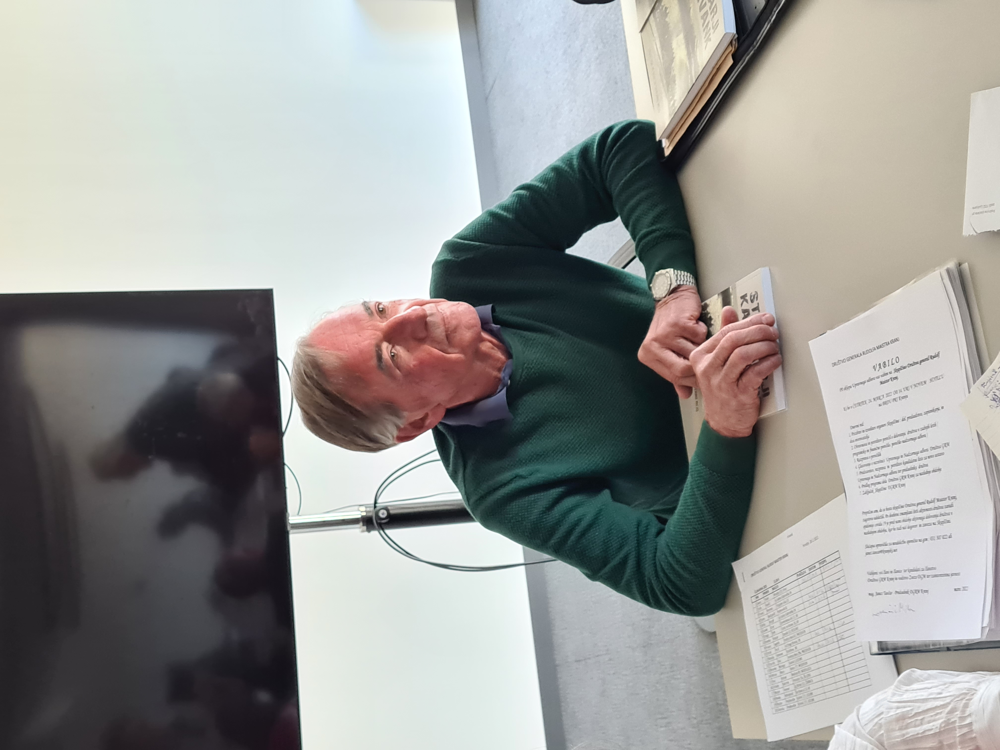

Volilna skupščina DGRM Kranj 24. 3. 2022
Člani Društva general Rudolf Maister Kranj so imeli 24. 3. 2022 v hotelu Elegans na Brdu letno in volilno skupščino. Skupščino je začel in do izvolitve delovnih organov vodil predsednik društva mag. Janez Tavčar.
Skupščina je izvolila delovno predsedstvo, verifikacijsko komisijo in zapisnikarja. Delo delovnega predsedstva skupščine je vodil delovni predsednik dr. Iztok Purič, verifikacijsko komisijo Jože Kavčič, za zapisnikarico pa je bila izvoljena Lojzka Škerjanec. Verifikacijska komisija je ugotovila, da je na skupščini prisotnih več kot polovica članov društva, zato lahko veljavno sklepa. Na skupščini sta kot gosta sodelovala podžupan Občine Kranj Janez Černe in generalni sekretar Zveze društev generala Maistra Rudolf Pfajfar.
Predsednik društva je podal podrobno poročilo o delu društva v zadnjih treh letih, blagajničarka poročilo o prihodkih in odhodkih v letih 2020 in 2021 ter o tekočem stanju denarnih sredstev, predsednik nadzornega odbora pa je poročal, da pri nadzorih poslovanja društva nadzorni odbor ni ugotovil nepravilnosti. V razpravi o poročilih je sodelovalo več članov društva, ki so izpostavili nekatera odprta vprašanja, ki so zajeta v predlogu programa dela za letošnje leto. Vsa poročila so člani društva brez dopolnitev sprejeli, nato pa so soglasno razrešili predsednika društva, upravni odbor in nadzorni odbor.
Delovni predsednik je za tem predstavil kandidatno listo organov društva za nov mandat:
- za predsednika Roman Nahtigal,
- za upravni odbor Iztok Purič, Alojzija Škerjanec, Franci Rozman, Franci Jagodic, Jože Kavčič in Nataša Vehovec ter
- za nadzorni odbor Janez Tavčar, Mišo Burgar in Slavko Erzar.
Na predlagane kandidate člani društva niso imeli pripomb, zato so jih z javnim glasovanjem soglasno izvolili na predlagane funkcije v društvu za nov mandat. Po izvolitvi je novi predsednik društva predstavil program dela za letošnje leto z osrednjo nalogo vseh članov društva, da vsak pridobi najmanj enega novega člana. Predlagani program dela društva so člani soglasno sprejeli.
Skupščino sta pozdravila tudi oba gosta, podžupan Občine Kranj Janez Černe in generalni sekretar Zveze društev generala Maistra Rudolf Pfajfar, ki sta društvu zaželela, da še naprej skrbi predvsem za ohranjanje spomina na borce za severno mejo in generala Rudolfa Maistra, na partizanske borce in junake druge svetovne vojne ter na žrtve desetdnevne vojne in s tem povezanega domoljubja.
Na koncu skupščine se je delovni predsednik dr. Iztok Purič zahvalil dosedanjemu predsedniku društva za opravljeno delo v treh mandatih z željo, da še naprej po svojih močeh prispeva k uspešnemu delu društva.
Po končani skupščini so prisotni posedeli na terasi hotela Elegans ter poklepetali ob prigrizku in napitkih.
Nagovor Rudolfa Pfajfarja, generalnega sekretarja Zveze društev generala Maistra
Janez Tavčar, dosedanji predsednik DGRM Kranj
 Delovni predsednik dr. Iztok Purič